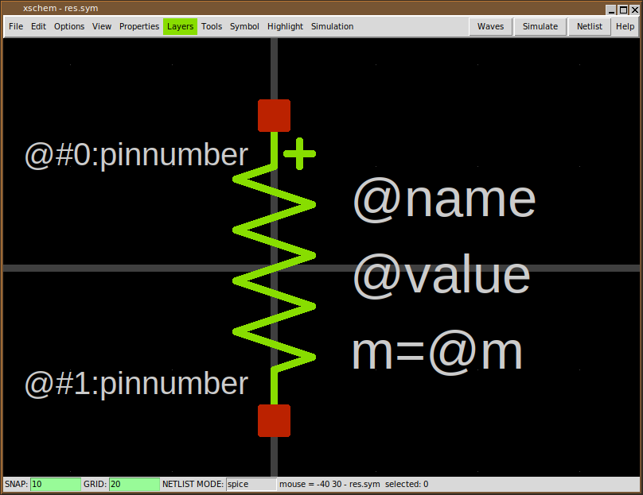
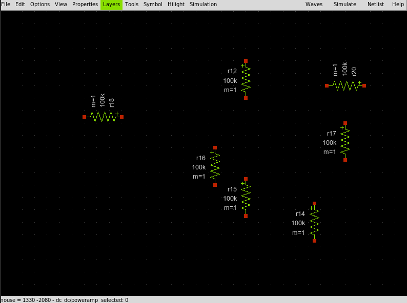
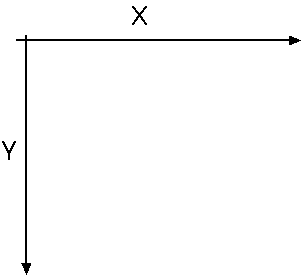
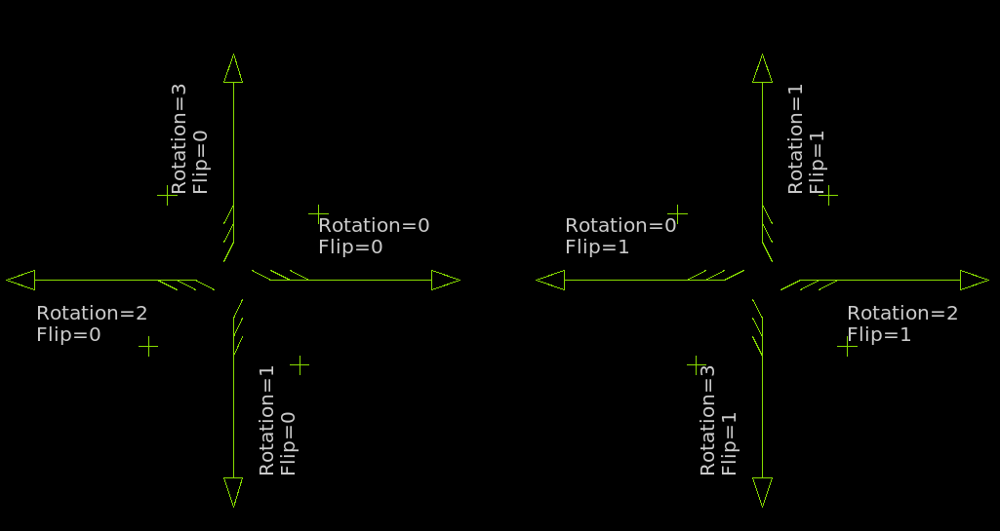
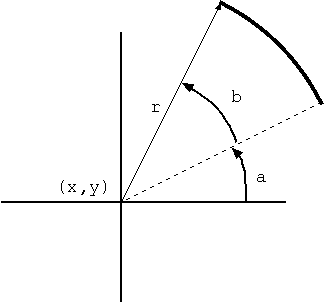
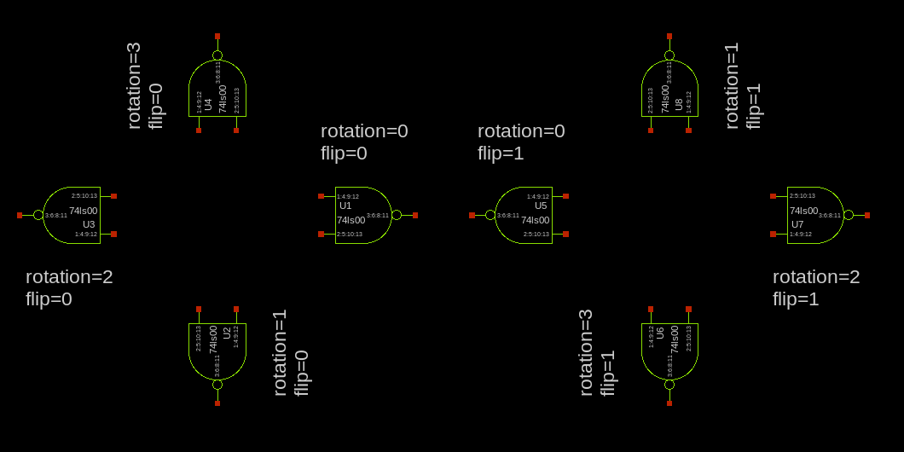
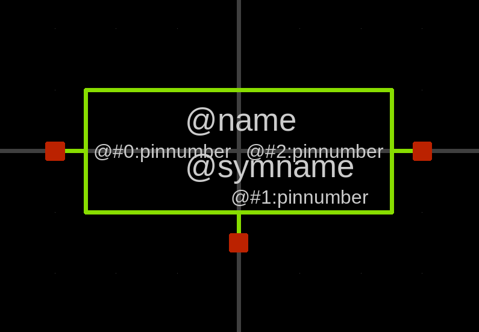
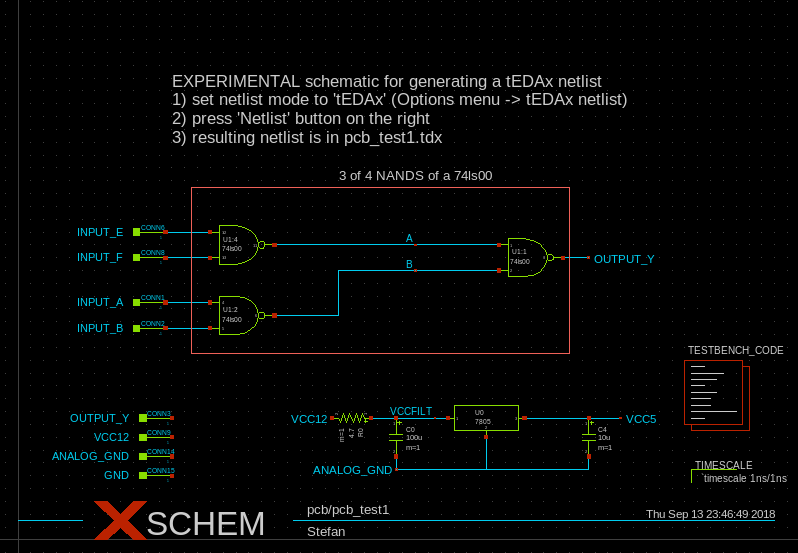

DEVELOPER INFO
GENERAL INFORMATION
XSCHEM uses layers for its graphics, each layer is a logical entity defining graphic attributes like color and fill style. There are very few graphical primitive objects:
- Lines
- Rectangles
- Open / close Polygons
- Arcs / Circles
- Text
These primitive objects can be drawn on any layer. XSCHEM number of layers can be defined at compile time, however there are some predefiend layers (from 0 to 5) that have specific functions:
- Background color
- Wire color (nets)
- Selection color / grid
- Text color
- Symbol drawing color
- Pin color
- General purpose
- General purpose
- General purpose
....
- General purpose
- General purpose
Although any layer can be used for drawing it is strongly advisable to avoid the background color and the selection color to avoid confusion. Drawing begins by painting the background (layer 0), then drawing the grid (layer 1) then drawing wires (nets) on layer 2, then all graphical objects (lines, rectangles, polygons) starting form layer 0 to the last defined layer.
SYMBOLS
There is a primitive object called symbol. Symbols are just a group of primitive graphic objects (lines, polygons, rectangles, text) that can be shown as a single atomic entity. Once created a symbol can be placed in a schematic. The instantiation of a symbol is called 'component'.
The above picture shows a resistor symbol, built drawing some lines on layer 4 (green), some pins on layer 5 (red) and some text. Symbols once created are stored in libraries (library is just a UNIX directory known to XSCHEM) and can be placed like just any other primitive object multiple times in a schematic window with different orientations.
WIRES
Another special primitive object in XSCHEM is 'Wire', Graphically it is drawn as a line on layer 1 (wires). Wires are drawn only on this layer, they are treated differently by XSCHEM since they carry electrical information. Electrical connection between components is done by drawing a connecting wire.
Since wires are used to build the circuit connectivity it is best to avoid drawing lines on layer 1 to avoid confusion, since they would appear like wires, but ignored completely for electrical connectivity.
PROPERTIES
All XSCHEM objects (wires, lines, rectangles, polygons, text, symbol instance aka component) have a property string attached. Any text can be present in a property string, however in most cases the property string is organized as a set of key=value pairs separated by white space. In addition to object properties the schematic or symbol view has global properties attached. There is one global property defined per netlisting mode (currently SPICE, VHDL, Verilog, tEDAx) and one additional global property for symbols (containing the netlisting rules usually). See the XSCHEM properties section of the manual for more info.
COORDINATE SYSTEM
XSCHEM coordinates are stored as double precision floating point numbers, axis orientation is the same as Xorg default coordinate orientation:
When drawing objecs in XSCHEM coordinates are snapped to a multiple of 10.0 coordinate units, so all drawn objects are easily aligned. The snap level can be changed to any value by the user to allow drawing small objects if desired. Grid points are shown at multiples of 20.0 coordinate units, by default.
XSCHEM FILE FORMAT SPECIFICATION
XSCHEM schematics and symbols are stored in .sch and .sym files respectively. The two file formats are identical, with the exception that symbol (.sym) files usually do not contain wires and component instantiations (although they can).
every schematic/symbol object has a corresponding record in the file. A single character at the beginning of a line, separated by white space from subsequent fields marks the type of object:
- v : XSCHEM Version string
- S : Global property associated to the .sch file for SPICE netlisting
- V : Global property associated to the .sch file for VERILOG netlisting
- G : Global property associated to the .sch file for VHDL netlisting OR Global property associated to the .sym file for netlisting (in 1,2 file format K is used, although backward compatibility is guaranteed)
- E : Global property associated to the .sch file for tEDAx netlisting
- K : Global property associated to the .sch/sym file for netlisting.
For schematic it is used if instantiated as a component (file format 1.2 and newer) - L : Line
- B : Rectangle
- P : Open / Closed polygon
- A : Arc / Circle
- T : Text
- N : Wire, used to connect together components (only in .sch files)
- C : Component instance in a schematic (only in .sch files)
- [ : Start of a symbol embedding, the symbol refers to the immediately preceding component instance. This tag must immediately follow a component instance (C). See the example here under. A component symbol is embedded into the schematic file when saving if the embed=true attribute is set on one of the component instances. Only one copy of the embedded symbol is saved into the schematic and all components referring to this symbol will use the embedded definition. When a component has an embedded symbol definition immediately following, a embed=true is added to the component property string if not already present.
C {TECHLIB/PCH} 620 -810 0 0 {name=x5 model=PCHLV w=4 l=0.09 m=1 embed=true}
[
G {type=pmos
format="@name @pinlist @model w=@w l=@l m=@m"
verilog_format="@verilog_gate #(@del ) @name ( @@d , @@s , @@g );"
template=" name=x1 verilog_gate=pmos del=50,50,50 model=PCH w=0.68 l=0.07 m=1 "
generic_type="model=string"
}
V {}
S {}
E {}
L 4 5 20 20 20 {}
L 4 20 20 20 30 {}
L 4 5 -20 20 -20 {}
L 4 20 -30 20 -20 {}
L 4 -20 0 -10 0 {}
L 4 5 -27.5 5 27.5 {11}
L 4 5 -5 10 0 {}
L 4 5 5 10 0 {}
L 4 10 0 20 0 {}
L 18 -2.5 -15 -2.5 15 {}
B 5 17.5 27.5 22.5 32.5 {name=d dir=inout}
B 5 -22.5 -2.5 -17.5 2.5 {name=g dir=in}
B 5 17.5 -32.5 22.5 -27.5 {name=s dir=inout}
B 5 17.5 -2.5 22.5 2.5 {name=b dir=in}
A 4 -6.25 0 3.75 270 360 {}
T {@w/@l*@m} 7.5 -17.5 0 0 0.2 0.2 {}
T {@name} 7.5 6.25 0 0 0.2 0.2 {999}
T {@model} 2.5 -27.5 0 1 0.2 0.2 {layer=8}
T {D} 25 17.5 0 0 0.15 0.15 {layer=13}
T {NF=@nf} -5 -15 0 1 0.15 0.15 {}
]
the object tag in column 1 is followed by space separated fields that completely define the corresponding object.
VERSION STRING
Example:
v {xschem version=2.9.7 file_version=1.2}
Two attributes are defined, the xschem version and the file format version. Current file format version is 1.2. This string is guaranteed to be the first one in XSCHEM .sch and .sym files.
GLOBAL SCHEMATIC/SYMBOL PROPERTIES
Example:
G {type=regulator
format="x@name @pinlist r@symname"
verilog_format="assign @#2 = @#0 ;"
tedax_format="footprint @name @footprint
device @name @symname"
template="name=U1 footprint=TO220"}
Global properties define a property string bound to the parent schematic/symbol file,
there is one global property record per netlisting mode,
currently SPICE, VHDL, Verilog, tEDAx.
In addition (only in file_format 1.2 and newer) for schematics and symbols there is a global attribute ('K')
that defines how to netlist the schematic/symbol if placed as a
symbol into another parent schematic (should be set in the same way as the 'G' global attribute for symbols
in pre-1.2 file format).
Normally only 'G' ('K' in 1.2 file format) type property strings are used for symbols and define attributes
telling netlisters what to do with the symbol, while global property
strings in schematic files corresponding to the active netlisting mode of XSCHEM are
copied verbatim to the netlist.
the object tag (S, V, G, E, K) is followed by the property string enclosed in curly braces
({...}). This allows strings to contain any white space and newlines.
Curly braces if present in the string are automatically escaped with the '\' character
by XSCHEM when saving data.
Example of the 4 property string records for a schematic file:
G {}
V {assign #1500 LDOUT = LDIN +1;
}
E {}
S {}
in this case only the verilog-related global property has some definition. This is Verilog code that is copied into the output netlist.
TEXT OBJECT
Example: T {3 of 4 NANDS of a 74ls00} 500 -580 0 0 0.4 0.4 {font=Monospace layer=4}
This line defines a text object, the first field after the type tag is the displayed text,
followed by X and Y coordinates,rotation, mirror,
horizontal and vertical text size and finally a property string defining some text attributes.
- The displayed text is enclosed in curly braces ({...}) to allow white space. Literal curly braces must be escaped if present in the saved string. XSCHEM will automatically add the escapes where needed on save.
- X ad Y coordinates are saved and retrieved as double precision floating point numbers.
- Rotation and mirror are integers (range [0:3], [0:1] respectively) that define the orientation of text objects. Using rotation and mirror text can be aligned to any corner of its bounding box, so there are 4 different alignments for vertical text and 4 different alignments for horizontal text. Below picture shows how text is displayed with respect to its anchor point. 
- text X and Y sizes are stored as floating point numbers.
- Finally a property string is stored with the same syntax as the displayed text field.
Currently the following attributes are predefined for text objects:
- font Name of font to be used (ex: font=Arial)
- layer Number of layer to use for drawing (as in Xschem Layers menu)
- hcenter If set to true horizontal center text
- vcenter If set to true vertical center text
- weight If set to bold use bold style
- slant If set to italic or oblique use that style for text
WIRE OBJECT
Example: N 890 -130 890 -110 {lab=ANALOG_GND}
The net 'N' tag is followed by the end point coordinates x1,y1 - x2,y2
(stored and read as double precision numbers) and a property string, used in this case to name the net.
LINE OBJECT
Example: L 4 -50 20 50 20 {This is a line on layer 4}
The line 'L' tag is followed by an integer specifying the graphic layer
followed by the x1,y1 - x2,y2 coordinates of the line and a property string.
RECTANGLE OBJECT
Example: B 5 -62.5 -2.5 -57.5 2.5 {name=IN dir=in pinnumber=1}
The 'Box' 'B' tag is followed by an integer specifying the graphic layer followed
by the x1,y1 - x2,y2 coordinates of the rectangle
and a final property string. This example defines a symbol pin.
OPEN / CLOSED POLYGON OBJECT
Example: P 3 5 2450 -210 2460 -170 2500 -170 2510 -210 2450 -210 {}
the Polygon 'P' tag is followed by an integer specifying the layer number,
followed by the number of points (integer),
the x,y coordinates of the polygon points and the property string (empty in this example).
If the last point is coincident to the first point a closed polygon is drawn.
A 'fill=true' arribute may be given to fill a cloded polygon, in this case a polygon line looks like:
P 3 5 2450 -210 2460 -170 2500 -170 2510 -210 2450 -210 {fill=true}
ARC OBJECT
Example: A 3 450 -210 120 45 225 {}
The Arc 'A' tag is followed by an integer specifying the layer number, followed by the arc x, y center coordinates,
the arc radius, the start angle (measured counterclockwise from the three o'clock direction), the arc sweep angle
(measured counterclockwise from the start angle) and the property string (empty in this example).
Angles are measured in degrees.

COMPONENT INSTANCE
Example: C {capa.sym} 890 -160 0 0 {name=C4 m=1 value=10u device="tantalium capacitor"}
Format: C {<symbol reference>} <X coord> <Y coord> <rotation>
<flip> {<attributes>}
The component instance tag C is followed by a string specifying library/symbol or only symbol
(see This tutorial about symbol references)
followed by the x,y coordinates, rotation (integer range [0:3]),
mirror (integer range [0:1]), and a property string defining various attributes
including the mandatory name=... attribute.
Orientation and mirror meanings are as follows:

EXAMPLE OF A COMPLETE SYMBOL FILE (7805.sym)
G {type=regulator
format="x@name @pinlist r@symname"
verilog_format="assign @#2 = @#0 ;"
tedax_format="footprint @name @footprint
device @name @symname"
template="name=U1 footprint=TO220"}
V {}
S {}
E {}
L 4 -60 0 -50 0 {}
L 4 50 0 60 0 {}
L 4 -50 -20 50 -20 {}
L 4 50 -20 50 20 {}
L 4 -50 20 50 20 {}
L 4 -50 -20 -50 20 {}
L 4 0 20 0 30 {}
B 5 -62.5 -2.5 -57.5 2.5 {name=IN dir=in pinnumber=1}
B 5 -2.5 27.5 2.5 32.5 {name=GND dir=inout pinnumber=2}
B 5 57.5 -2.5 62.5 2.5 {name=OUT dir=out pinnumber=3}
T {@name} -17.5 -15 0 0 0.2 0.2 {}
T {@symname} -17.5 0 0 0 0.2 0.2 {}
T {@#0:pinnumber} -47.5 -2.5 0 0 0.12 0.12 {}
T {@#1:pinnumber} -2.5 12.5 0 0 0.12 0.12 {}
T {@#2:pinnumber} 47.5 -2.5 0 1 0.12 0.12 {}
EXAMPLE OF A COMPLETE SCHEMATIC FILE (pcb_test1.sch)
G {}
V {}
S {}
E {}
B 20 270 -550 860 -290 {}
T {3 of 4 NANDS of a 74ls00} 500 -580 0 0 0.4 0.4 {}
T {EXPERIMENTAL schematic for generating a tEDAx netlist
1) set netlist mode to 'tEDAx' (Options menu -> tEDAx netlist)
2) press 'Netlist' button on the right
3) resulting netlist is in pcb_test1.tdx } 240 -730 0 0 0.5 0.5 {}
N 230 -330 300 -330 {lab=INPUT_B}
N 230 -370 300 -370 {lab=INPUT_A}
N 680 -420 750 -420 {lab=B}
N 680 -460 750 -460 {lab=A}
N 400 -350 440 -350 {lab=B}
N 850 -440 890 -440 {lab=OUTPUT_Y}
N 230 -440 300 -440 {lab=INPUT_F}
N 230 -480 300 -480 {lab=INPUT_E}
N 400 -460 440 -460 {lab=A}
N 550 -190 670 -190 {lab=VCCFILT}
N 590 -130 590 -110 {lab=ANALOG_GND}
N 790 -190 940 -190 {lab=VCC5}
N 890 -130 890 -110 {lab=ANALOG_GND}
N 730 -110 890 -110 {lab=ANALOG_GND}
N 730 -160 730 -110 {lab=ANALOG_GND}
N 590 -110 730 -110 {lab=ANALOG_GND}
N 440 -460 680 -460 {lab=A}
N 500 -420 680 -420 {lab=B}
N 500 -420 500 -350 {lab=B}
N 440 -350 500 -350 {lab=B}
C {title.sym} 160 -30 0 0 {name=l2 author="Stefan"}
C {74ls00.sym} 340 -350 0 0 {name=U1:2 risedel=100 falldel=200}
C {74ls00.sym} 790 -440 0 0 {name=U1:1 risedel=100 falldel=200}
C {lab_pin.sym} 890 -440 0 1 {name=p0 lab=OUTPUT_Y}
C {capa.sym} 590 -160 0 0 {name=C0 m=1 value=100u device="electrolitic capacitor"}
C {74ls00.sym} 340 -460 0 0 {name=U1:4 risedel=100 falldel=200 power=VCC5
url="http://www.engrcs.com/components/74LS00.pdf".sym}
C {LM7805.pdf"}
C {lab_pin.sym} 490 -190 0 0 {name=p20 lab=VCC12}
C {lab_pin.sym} 940 -190 0 1 {name=p22 lab=VCC5}
C {lab_pin.sym} 590 -110 0 0 {name=p23 lab=ANALOG_GND}
C {capa.sym} 890 -160 0 0 {name=C4 m=1 value=10u device="tantalium capacitor"}
C {res.sym} 520 -190 1 0 {name=R0 m=1 value=4.7 device="carbon resistor"}
C {lab_wire.sym} 620 -460 0 0 {name=l3 lab=A}
C {lab_wire.sym} 620 -420 0 0 {name=l0 lab=B}
C {lab_wire.sym} 650 -190 0 0 {name=l1 lab=VCCFILT}
C {connector.sym} 230 -370 0 0 {name=CONN1 lab=INPUT_A verilog_type=reg}
C {connector.sym} 230 -330 0 0 {name=CONN2 lab=INPUT_B verilog_type=reg}
C {connector.sym} 240 -190 0 0 { name=CONN3 lab=OUTPUT_Y }
C {connector.sym} 230 -480 0 0 {name=CONN6 lab=INPUT_E verilog_type=reg}
C {connector.sym} 230 -440 0 0 {name=CONN8 lab=INPUT_F verilog_type=reg}
C {connector.sym} 240 -160 0 0 { name=CONN9 lab=VCC12 }
C {connector.sym} 240 -130 0 0 { name=CONN14 lab=ANALOG_GND verilog_type=reg}
C {connector.sym} 240 -100 0 0 { name=CONN15 lab=GND verilog_type=reg}
C {code.sym} 1030 -280 0 0 {name=TESTBENCH_CODE only_toplevel=false value="initial begin
$dumpfile(\\"dumpfile.vcd\\");
$dumpvars;
INPUT_E=0;
INPUT_F=0;
INPUT_A=0;
INPUT_B=0;
ANALOG_GND=0;
#10000;
INPUT_A=1;
INPUT_B=1;
#10000;
INPUT_E=1;
INPUT_F=1;
#10000;
INPUT_F=0;
#10000;
INPUT_B=0;
#10000;
$finish;
end
assign VCC12=1;
"}
C {verilog_timescale.sym} 1050 -100 0 0 {name=s1 timestep="1ns" precision="1ns" }
